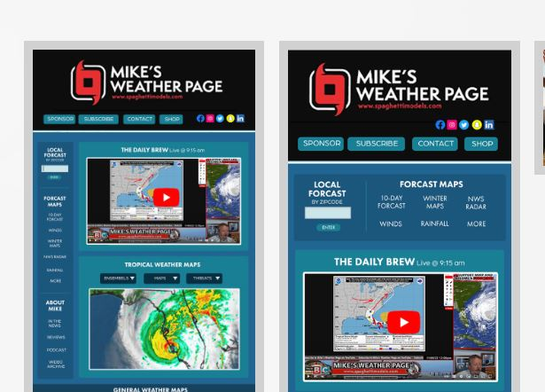

Connect With Me!
LinkedIn is a great resource for connecting with other professionals. I have a profile that contains detailed info on many of my experiences. Check it out!
Connect

Graphic Design Portfolio
Over the years I have developed many advertising pieces for which I have compiled onto my online portfolio. Here you will see examples of my work!
View Portfolio